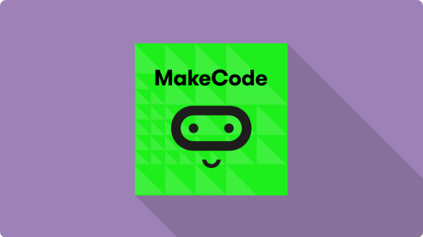

Het begin van Microsoft
Tegenwoordig is microsoft een van de grootste bedrijven ter wereld. Iedereen maakt gebruikt van de service en diensten die Microsoft levert. Het begin van Microsoft gaat terug naar het jaar 1972. Bill Gates en Paul Allen waren jeugdvrienden en allebei gek op programmeren. Microsoft is begonnen onder de naam Traf-O-Data. Traf-O-Data verkocht een computer waarmee je verkeersgegevens kon volgen en analyseren. In januari 1975 werd de Altair 8800 op de markt gezet door MITS. De Altair 8800 was een microcomputer die werkte op de Intel 8080A processor. Het was de start van de computer. De Altair 8800 was het begin van Microsoft. Paul Allen was er van overtuigd dat ze voor de Altair 8800 een BASIC-interpreter konden programmeren. De BASIC-interpreter was een computerprogramma dat code kon vertalen naar een begrijpelijke vorm voor de processor. De BASIC-interpreter was de eerste software die gemaakt is door Microsoft. Het is dus het fundament van Microsoft. De software die Gates en Allen hadden gemaakt was een tolk. Gates en Allen hebben dit in maart 1975 gedemonstreerd aan MITS. MITS was zeer overtuigd van de BASIC, dat ze ermee in stemde om het op de markt te brengen onder de naam Altair Basic. Op 4 april 1975 werd Micro-Soft opgericht met Gates als CEO. Zonder de uitvinding van de Altair BASIC hadden we vandaag de dag waarschijnlijk heel veel minder software op de markt. Micro-Soft is na de Altair BASIC steeds verder gegaan met de ontwikkeling van software. Na een overeenkomst te hebben getekend in augustus 1977 met ASCII Magazine in Japan, werd het eerste internationale kantoor van Microsoft geopend. Het werd het ASCII Microsoft kantoor genoemd. In de jaren erna was Microsoft erg veel bezig met het ontwikkelen van software, tot ze een nieuwe wereld veranderende software hadden ontwikkelt genaamd Microsoft Windows. Microsoft Windows werd op 20 november 1985 uitgebracht. In 1990 werd de volgende wereldberoemde software uitgebracht genaamd Microsoft Office-suite. Het belang van software licenties voor Microsoft was erg groot, omdat dit een vorm van inkomsten genereert voor het bedrijf.

Microsoft vandaag de dag
Vanaf de oprichting van Microsoft tot aan vandaag de dag zijn er erg veel veranderingen doorgevoerd. Zo zijn er een aantal verschillende CEO’s geweest. Sinds 2014 is Satya Nadelle de CEO van Microsoft. Nadelle is de opvolgers van Steve Ballmer en daarmee de derde CEO van Microsoft sinds de oprichting. Satya Nadelle heeft gezegd: “Cloud first, Mobile first". Dit betekent dat Microsoft zich meer aan het focussen is op besturingssystemen voor de telefoon en op cloudcomputing. Uit de focus op cloud computing is de nieuwe software Azure ontwikkeld. Ook deze software is door het dak gegaan en erg populair geworden de laatste jaren. Sinds Nadelle de CEO van Microsoft is, is er ook gefocust op telefoons. Nadelle bracht ook Office en Cortanana naar Android en IOS. Voorheen was deze software alleen toegankelijk op een computer. Microsoft heeft in 2019 een omzet gedraaid van ruim 125 miljard dollar met een winstpercentage van 29%. Je kunt dus wel stellen dat Microsoft ook onder een andere CEO erg winstgevend is en nog steeds een bedrijf is van wereldklasse.
Bill Gates
Bill Gates is de meest bekende van de twee oprichters. Bill Gates is geboren op 28 oktober 1955 en is nu 65 jaar oud. Hij heeft gestudeerd aan de Harvard univesiteit en is daarmee gestopt toen zijn vriend Allen er op wees dat de Altair 8800, omdat hij realiseerde dat er voor een computer software nodig is. Bill Gates is een van de oprichters van Microsoft en is een topondernemer. Gates heeft een geschat vermogen van meer dan honderd miljard dollar. Dit bizarre vermogen heeft Gates deels opgebouwd met zijn aandelen in Microsoft. Zijn aandeel in Microsoft vormt slecht een klein deel van zijn protfolio. De aandelen van Gates vormen niet eens een kwart van zijn totale vermogen. Gates investeert namelijk ook in tientallen andere bedrijven over de hele wereld. Hij investeert onder andere in een Canadese spoorwegmaatschappij, hotelketen Four Seasons en hij investeert in fotobureau Corbis. Zijn investeringen zijn erg variërend. Misschien is dat juist wel de rede waarom hij zo’n groot vermogen heeft.

Paul Allen
Paul Allen is misschien iemand waar je nog niet over hebt gehoord. Paul Allen was de compagnon van Bill Gates, waarmee ze samen eigenaar waren van Microsoft. Paul Gardner Allen is geboren op 21 januari 1953 en helaas op 15 oktober 2018 op 65 jarige leeftijd overleden. Hij studeerde aan de Washington State University, waar hij stopte na twee jaar, om samen met Bill Gates computersoftware te maken. Allen was een programmeur in hart en nieren. Daarom was hij misschien ook minder bekend dan Bill Gates. Allen was niet allen programmeur, maar ook onderzoeker, investeerder en filantroop. Allen had een geschat vermogen van 20 miljard dollar. Dat is dus een heel stuk minder dan Bill Gates. In het jaar 1983 besloot Allen om niet meer mee te doen met de actieve operaties bij Microsoft, omdat hij de diagnose van Hodgkin-lymfoon kreeg. Wel bleef Allen in de raad van bestuur als vice-voorzitter. Allen was niet alleen oprichter van Microsoft, maar ook van een aantal andere bedrijven. Allen was onder andere ook oprichter van de Allen Institues for Brain Science, Artificial Intelligence, Cell Science, Stratolaunch Systems en Apex Learning.
Het geheim achter Microsoft
Microsoft is een erg succesvol bedrijf. De reden dat Microsoft zo succesvol is, komt grotendeels doordat Microsoft bijna geen concurrentie heeft. Eén van de belangrijkste reden dat Microsoft zo succesvol is, komt door de lage kosten. Voor een relatief lage prijs krijg je heel veel software tot je beschikking. Van systeem beveiliging, financieel management en samenwerken. Vooral het laatste is de laatste jaren erg gegroeid. Het samenwerken in een cloud wordt erg veel gebruikt. Dat komt mede door de corona crisis dat iedereen thuis moest werken. Het is dan wel zo handig om met al je collega’s in een cloud te werken.
MakeCode
Zoals al gezegd heeft Microsoft erg veel software gebouwd die beschikbaar zijn voor ons. Voor het bouwen van onze robot maken wij gebruik van de MakeCode software, om de code te maken en te downloaden naar onze Playground Express. De MakeCode software is ook eigendom van Microsoft. Hierdoor is er dus een link tussen het bouwen van de robot en Microsoft. MakeCode is gemaakt door Microsoft, omdat zij het belangrijk vinden dat mensen leren programmeren. Bill Gates zei: ‘Everyone can benefit from learning this skill’ (Elkins, K. (2018, 6 september)). Bill Gates is al programmeur sinds dat hij dertien jaar is.

Bronnenlijst
Computer History Museum. (2021, 23 februari). Bill Gates. CHM.
https://computerhistory.org/profile/bill-gates/
Wikipedia contributors. (2021, 23 september). Paul Allen. Wikipedia.
https://en.wikipedia.org/wiki/Paul_Allen#Early_life
Hoe Bill Gates een slordige 16 miljard rijker werd. (2014, 3 januari). Business Insider Nederland.
https://www.businessinsider.nl/hoe-bill-gates-een-slordige-16-miljard-rijker-werd-420272/
Elkins, K. (2018, 6 september). Bill Gates: “Everyone can benefit” from learning this skill. CNBC.
https://www.cnbc.com/2018/09/06/bill-gates-everyone-can-benefit-from-learning-this-skill.html
The Real Secret To Microsoft’s Success. (2018). Investopedia.
https://www.investopedia.com/stock-analysis/032014/real-secret-microsofts-success-msft-aapl-goog-ibm.aspx